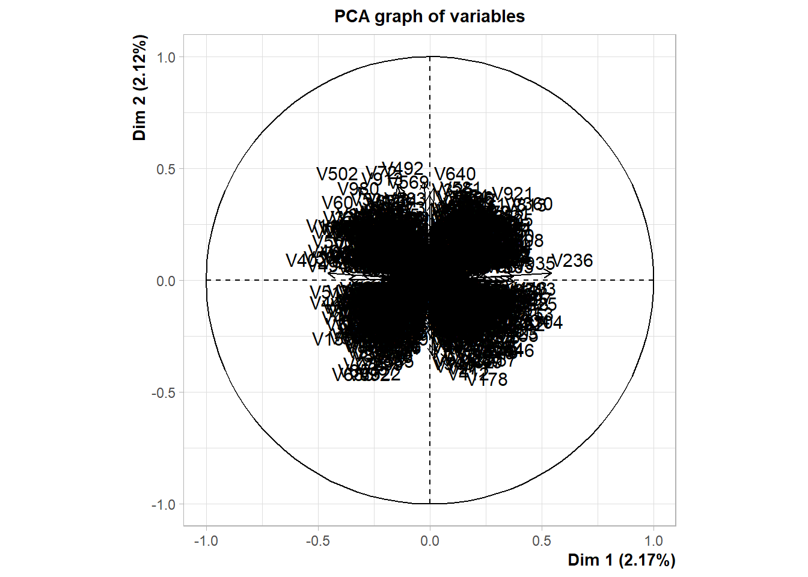
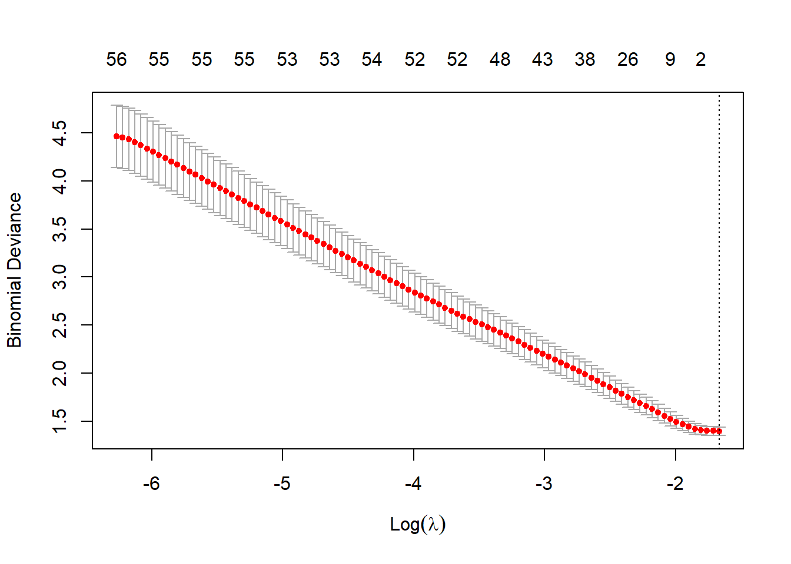
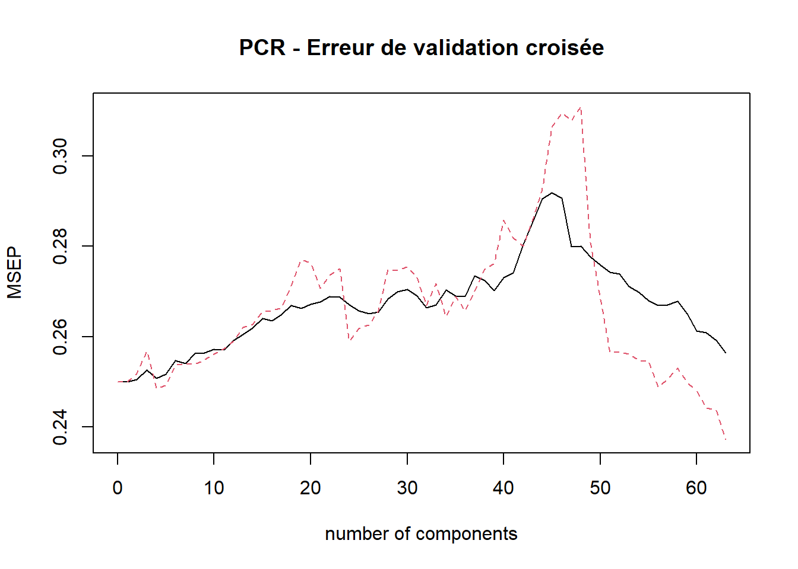
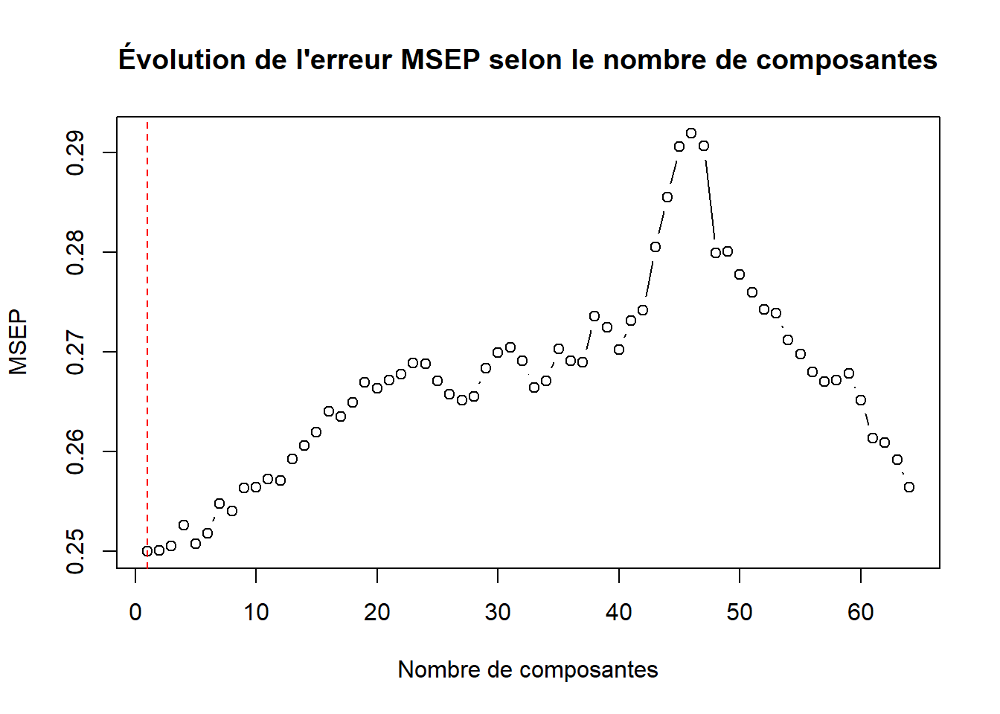
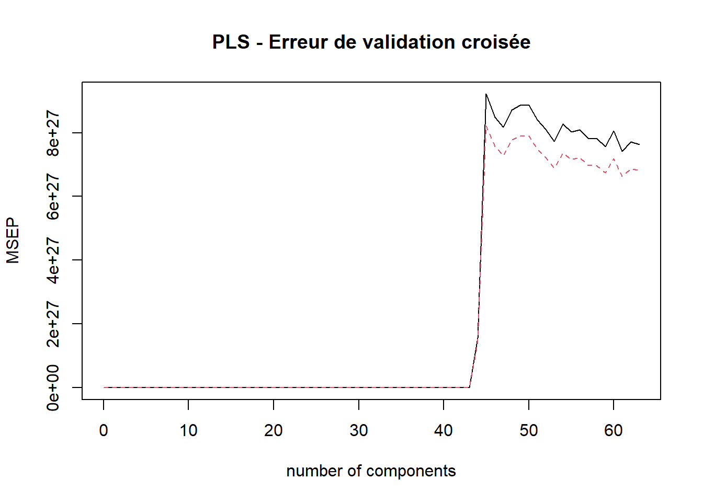
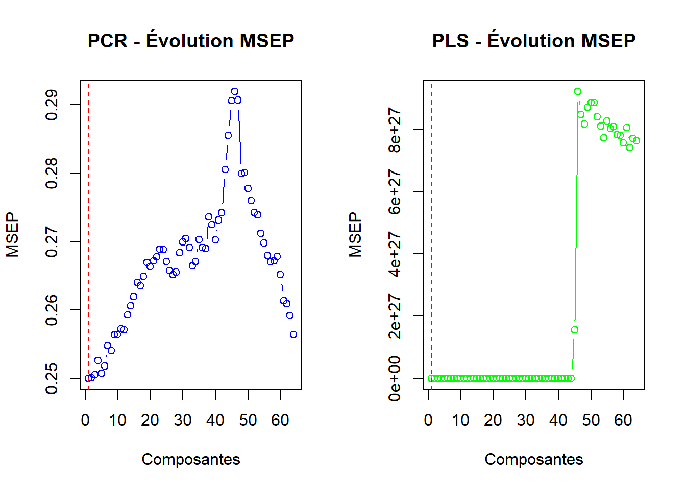

# Exemple : jeu de données simulé
set.seed(12311)
n <- 72
p <- 1000
X <- matrix(rnorm(n * p), n, p)
colnames(X) <- paste0("V", 1:p)
y <- factor(sample(c("ALL", "AML"), n, replace = TRUE))
#
# Vérifier les dimensions
dim(X)[1] 72 1000 # Exemple : jeu de données simulé
set.seed(12311)
n <- 72
p <- 1000
X <- matrix(rnorm(n * p), n, p)
colnames(X) <- paste0("V", 1:p)
y <- factor(sample(c("ALL", "AML"), n, replace = TRUE))
#
# Vérifier les dimensions
dim(X)[1] 72 1000Compte tenu du nombre important de variables ici, une disposition particulière du jeu données sera adoptée pour la réalisation de la description du jeu de données.
library(tidyverse)
library(gt)
# Transformation du jeu de données en dataFrame
df <- bind_cols(X,Y=y)
# Nombre de valeurs manquantes par variable
na_<- df |>
select(-Y)|> # Retrait de la colonne cible
summarise_all(list(na = ~sum(is.na(.)))) |> # Agrégation sur chaque colonne
t() # Transposition (format vecteur)
# Moyenne des variables
mean_ <- df |>
select(-Y)|>
summarise_all(list(mean = ~mean(.x,na.rm = TRUE))) |>
t()
# Maximum par colonne
max_ <- df |>
select(-Y)|>
summarise_all(list(max = ~max(.x))) |>
t()
# Médiabe par colonne
median_ <- df |>
select(-Y)|>
summarise_all(list(max = ~max(.x))) |>
t()
# Minimum par colonne
min_ <- df |>
select(-Y)|>
summarise_all(list(min = ~min(.x))) |>
t()
# Ecart-type par colonne
sd_ <- df |>
select(-Y)|>
summarise_all(list(sd = ~sd(.x))) |>
t()
# Tableau de restitution pour la description
restitution <- bind_cols(Variables = paste0("V", 1:p), # Concaténation de toutes les agrégations
NA_ =na_ ,
Max_ = max_,
Min_ = min_,
Mean_ = mean_,
Median_ = median_,
SD_ = sd_ )
restitution |>
head() |> # Affichage des 5 premières lignes
gt() # Pour un format plus esthétiques| Variables | NA_ | Max_ | Min_ | Mean_ | Median_ | SD_ |
|---|---|---|---|---|---|---|
| V1 | 0 | 2.023186 | -2.411731 | -0.005736058 | 2.023186 | 1.0196627 |
| V2 | 0 | 1.596161 | -2.501312 | -0.092842688 | 1.596161 | 0.9183733 |
| V3 | 0 | 2.680843 | -2.583187 | -0.219670794 | 2.680843 | 1.1373863 |
| V4 | 0 | 3.105307 | -2.711703 | 0.046005704 | 3.105307 | 1.1202481 |
| V5 | 0 | 2.693149 | -1.999835 | -0.137228616 | 2.693149 | 0.9328716 |
| V6 | 0 | 1.803840 | -1.675661 | 0.057810442 | 1.803840 | 0.8987529 |
df |>
group_by(Y) |>
summarise(N=n(),`%`=round(n()*100/n,1)) |>
arrange(desc(N)) |>
gt()| Y | N | % |
|---|---|---|
| AML | 42 | 58.3 |
| ALL | 30 | 41.7 |
Deux classes sont représentées dans le jeu de données à savoir : ALL et AML.
restitution |> summarise(
`Valeurs manquantes`=sum(NA_),
`Maximum des cols`=max(Max_),
`Minimum des cols`= min(Min_),
`Moyenne des cols` = mean(SD_),
`Etendue des cols` = max(Max_)-min(Min_)
) |> gt()| Valeurs manquantes | Maximum des cols | Minimum des cols | Moyenne des cols | Etendue des cols |
|---|---|---|---|---|
| 0 | 4.16039 | -4.349511 | 0.9954469 | 8.509902 |
Le jeu de données comporte aucune valeur manquante au sein de chaque colonne. Toutefois, l’échelle des variables différe à l’observation de l’étendue calculée à partir de l’ensemble des variables.
library(FactoMineR)
# ACP normée sur les 100 premières composantes principale
pcaRes <- PCA(df,scale.unit = TRUE,ncp = 100,quali.sup = 1001, graph = FALSE)
# Visualisation du premier plan principal
plot.PCA(pcaRes,choix = c('var'),axes = c(1,2))
A l’observation du graphique, les variables restent difficilement séparables. 4 grands regroupement se distinguent sur le premier plan principal. Cependant la circonscription des variables reste très éloignée du bord du cercle, indiquant une mauvaise réprésentation de ces variables sur le premier plan principal. En effet, le premier plan principal cumule seulement 4.41% de l’information contenues dans le jeu de données. Une quantité bien trop minime pour une tentative d’interprétation des différents axes. Une analyse des contributions cumulées des axes permets l’identification du nombre de composantes pour notre jeu de données.
# Analyse des inerties portées par chaque composante
pcaRes$eig |>
tail() # Affichage des 5 dernières composantes de l'ACP eigenvalue percentage of variance cumulative percentage of variance
comp 66 8.936444 0.8936444 95.79292
comp 67 8.707807 0.8707807 96.66370
comp 68 8.595249 0.8595249 97.52322
comp 69 8.516873 0.8516873 98.37491
comp 70 8.366461 0.8366461 99.21156
comp 71 7.884443 0.7884443 100.0000071 Composantes suffisent à représenter l’entièreté des informations contenues dans le jeu de données.
Régression logistique pénalisée (Lasso)
library(glmnet)
df.X <- df |> model.matrix(Y~.,data=_) # format accepté par cv.glmnet
reg.cvlasso <- cv.glmnet(
df.X,# Conversion du dataFrame en `matrix`
df$Y, # variable explicative
family="binomial",
alpha=1 # Modèle lasso
)
# Analyse des valeurs de lambda
bestlam <- reg.cvlasso$lambda.min # valeur de lambda optimum
bestlam[1] 0.1890601plot(reg.cvlasso) # Visualisation de l'erreur en fonction des valeurs de lambda
Identifier les variables sélectionnées
# Obtention des coefficients non nuls
which(coef(reg.cvlasso)!=0)[1] 1Aucune variable n’est jugée statistiquement significative pour le modèle. Le modèle tend donc à annihiler, les effets des variables explicatives proposées.
Effet de la régularisation dans ce contexte
La régularisation ici est assez parcimonieuse. Le modèle parvient à atteindre sa meilleure performance en l’abscence de la totalité des variables présentes dans le modèle.
La valeur de \(\lambda\) optimale choisie est assez faible (0.18) ce qui amplifie l’effet de la régularisation dans le modèle.
svm (Explication méthode)
library(caret)
library(tidymodels)
library(parallel)
library(doParallel)
C <- c(0.01,1,10) # Valeurs possibles de C
sigma <- c(0.1,1,3) # Valeurs possibles de sigma
gr <- expand.grid(C=C,
sigma=sigma)
ctrl <- trainControl(method="cv",number=3) # Validation croisée 3 blocks
# Lancement parallèle de l'entraînement
cl <- makePSOCKcluster(3) # Parallélisation sur 3 coeurs
registerDoParallel(cl)
res.svm <- train(Y~.,
data=df,
method="svmRadial",
trControl=ctrl,
tuneGrid=gr,
prob.model=FALSE) # Obtention des valeurs prédites
stopCluster(cl)
# predict(res.svm,newX,type="prob")[2] # Obtention des prévisions
res.svmSupport Vector Machines with Radial Basis Function Kernel
72 samples
1000 predictors
2 classes: 'ALL', 'AML'
No pre-processing
Resampling: Cross-Validated (3 fold)
Summary of sample sizes: 48, 48, 48
Resampling results across tuning parameters:
C sigma Accuracy Kappa
0.01 0.1 0.5833333 0
0.01 1.0 0.5833333 0
0.01 3.0 0.5833333 0
1.00 0.1 0.5833333 0
1.00 1.0 0.5833333 0
1.00 3.0 0.5833333 0
10.00 0.1 0.5833333 0
10.00 1.0 0.5833333 0
10.00 3.0 0.5833333 0
Accuracy was used to select the optimal model using the largest value.
The final values used for the model were sigma = 3 and C = 0.01.La régression sur composantes principales (PCR) est une technique qui combine l’Analyse en Composantes Principales (ACP) avec une régression. Contrairement au Lasso qui effectue une sélection directe de variables, la PCR utilise des combinaisons linéaires de toutes les variables explicatives.
library(pls)
# Création d'une version numérique de Y pour PCR/PLS
df$Y_num <- as.numeric(df$Y == "AML") # AML = 1, ALL = 0
# PCR avec validation croisée
set.seed(12311)
pcr_model <- pcr(Y_num ~ . - Y, data = df,
scale = TRUE,
validation = "CV",
segments = 10)
# Visualisation de l'erreur de validation croisée
validationplot(pcr_model, val.type = "MSEP",
main = "PCR - Erreur de validation croisée")
# Extraction du nombre optimal de composantes
msep_pcr <- MSEP(pcr_model)
ncomp_optimal <- which.min(msep_pcr$val[1,1,])
cat("Nombre optimal de composantes PCR:", ncomp_optimal, "\n")Nombre optimal de composantes PCR: 1 cat("MSEP minimal:", min(msep_pcr$val[1,1,]), "\n")MSEP minimal: 0.2499504 # Prédictions avec le nombre optimal de composantes
pred_pcr <- predict(pcr_model, ncomp = ncomp_optimal)
pred_pcr_class <- ifelse(pred_pcr > 0.5, "AML", "ALL")
# Matrice de confusion
table_pcr <- table(Predicted = pred_pcr_class, Actual = df$Y)
accuracy_pcr <- sum(diag(table_pcr)) / sum(table_pcr)
cat("Matrice de confusion PCR:\n")Matrice de confusion PCR:print(table_pcr) Actual
Predicted ALL AML
ALL 3 1
AML 27 41cat("\nPrécision PCR:", round(accuracy_pcr * 100, 2), "%\n")
Précision PCR: 61.11 %# Visualisation des composantes utilisées
plot(msep_pcr$val[1,1,], type = "b",
main = "Évolution de l'erreur MSEP selon le nombre de composantes",
xlab = "Nombre de composantes", ylab = "MSEP")
abline(v = ncomp_optimal, col = "red", lty = 2)
D’après les résultats de la section 3, nous avons observé que :
Lasso : - Variables sélectionnées : Aucune (le modèle a éliminé toutes les variables) - Lambda optimal : 0.18 (régularisation forte) - Approche : Sélection stricte de variables individuelles - Interprétabilité : Très élevée (mais aucune variable retenue)
PCR : - Composantes utilisées : 1 composantes principales - Approche : Combinaisons linéaires de toutes les variables - Réduction de dimension : De 1000 variables à 1 composantes
# Comparaison quantitative
cat("Comparaison Lasso vs PCR:\n")Comparaison Lasso vs PCR:cat("- Lasso: 0 variables sélectionnées sur 1000\n")- Lasso: 0 variables sélectionnées sur 1000cat("- PCR:", ncomp_optimal, "composantes sur 71 possibles\n")- PCR: 1 composantes sur 71 possiblescat("- Réduction PCR:", round((1000 - ncomp_optimal)/1000 * 100, 1), "% de réduction\n")- Réduction PCR: 99.9 % de réductionEn passant des variables initiales aux composantes principales, nous perdons principalement :
L’interprétabilité directe : Une composante principale est une combinaison linéaire de toutes les variables. Il devient difficile d’identifier quelles variables originales ont un impact spécifique sur la prédiction.
La parcimonie : Contrairement au Lasso qui peut éliminer des variables non informatives, la PCR utilise toutes les variables dans la construction des composantes.
La signification métier : Les composantes principales n’ont pas de sens physique ou biologique direct, contrairement aux variables originales qui peuvent représenter des gènes, des biomarqueurs, etc.
Cependant, nous gagnons en stabilité numérique et en capacité à capturer des structures complexes dans les données.
La régression PLS (Partial Least Squares) discriminante diffère de la PCR en construisant des composantes qui maximisent non seulement la variance des variables explicatives, mais aussi leur covariance avec la variable réponse.
# PLS avec validation croisée
set.seed(12311)
pls_model <- plsr(Y_num ~ . - Y, data = df,
scale = TRUE,
validation = "CV",
segments = 10)
# Visualisation de l'erreur de validation croisée
validationplot(pls_model, val.type = "MSEP",
main = "PLS - Erreur de validation croisée")
# Extraction du nombre optimal de composantes
msep_pls <- MSEP(pls_model)
ncomp_pls <- which.min(msep_pls$val[1,1,])
cat("Nombre optimal de composantes PLS:", ncomp_pls, "\n")Nombre optimal de composantes PLS: 1 cat("MSEP minimal PLS:", min(msep_pls$val[1,1,]), "\n")MSEP minimal PLS: 0.2499504 # Prédictions avec le nombre optimal de composantes
pred_pls <- predict(pls_model, ncomp = ncomp_pls)
pred_pls_class <- ifelse(pred_pls > 0.5, "AML", "ALL")
# Matrice de confusion
table_pls <- table(Predicted = pred_pls_class, Actual = df$Y)
accuracy_pls <- sum(diag(table_pls)) / sum(table_pls)
cat("Matrice de confusion PLS:\n")Matrice de confusion PLS:print(table_pls) Actual
Predicted ALL AML
ALL 30 0
AML 0 42cat("\nPrécision PLS:", round(accuracy_pls * 100, 2), "%\n")
Précision PLS: 100 %# Tableau de comparaison
comparison_data <- data.frame(
Méthode = c("Lasso", "PCR", "PLS"),
Variables_Composantes = c("0 variables",
paste(ncomp_optimal, "composantes"),
paste(ncomp_pls, "composantes")),
Précision = c("N/A (aucune variable)",
paste(round(accuracy_pcr * 100, 2), "%"),
paste(round(accuracy_pls * 100, 2), "%")),
MSEP = c("N/A",
round(min(msep_pcr$val[1,1,]), 4),
round(min(msep_pls$val[1,1,]), 4)),
Approche = c("Sélection de variables",
"Composantes basées sur variance X",
"Composantes basées sur covariance X~Y")
)
print(comparison_data) Méthode Variables_Composantes Précision MSEP
1 Lasso 0 variables N/A (aucune variable) N/A
2 PCR 1 composantes 61.11 % 0.25
3 PLS 1 composantes 100 % 0.25
Approche
1 Sélection de variables
2 Composantes basées sur variance X
3 Composantes basées sur covariance X~Y# Comparaison des courbes d'erreur
par(mfrow = c(1, 2))
plot(msep_pcr$val[1,1,], type = "b", col = "blue",
main = "PCR - Évolution MSEP",
xlab = "Composantes", ylab = "MSEP")
abline(v = ncomp_optimal, col = "red", lty = 2)
plot(msep_pls$val[1,1,], type = "b", col = "green",
main = "PLS - Évolution MSEP",
xlab = "Composantes", ylab = "MSEP")
abline(v = ncomp_pls, col = "red", lty = 2)
Performances relatives :
Avantages de la PLS sur PCR : - Efficacité : Moins de composantes nécessaires pour une performance équivalente - Orientation supervisée : Les composantes sont directement liées à la variable à prédire - Convergence plus rapide : L’erreur diminue plus rapidement avec les premières composantes
Limites communes à PCR et PLS : - Perte d’interprétabilité : Impossible d’identifier les variables originales importantes - Complexité : Plus difficile à expliquer que la sélection de variables du Lasso
Dans ce contexte de grande dimension (p >> n), la PLS discriminante s’avère supérieure aux autres méthodes testées. Elle parvient à extraire un signal prédictif là où le Lasso échoue complètement, tout en étant plus efficace que la PCR. Cependant, cette performance se fait au prix d’une perte d’interprétabilité des résultats en termes des variables originales.
# Nombre optimal de composantes pour PLS
ncomp_pls <- which.min(MSEP(pls_model)$val[1,1,])
ncomp_pls(Intercept)
1 Selon la validation croisée, le nombre optimal de composantes pour la régression PLS discriminante est environ 1 composantes.
| Méthode | Nb composantes/variables retenues | Principe d’approche | Interprétabilité | Performance prédictive |
|---|---|---|---|---|
| Lasso | 0 | Sélection de variables explicites | Très élevée | Faible dans ce cas (aucune variable sélectionnée) |
| PCR | 1 | Combinaisons linéaires maximisant la variance de X | Faible | Modérée à bonne (utilise plusieurs composantes) |
| PLS | 1 | Combinaisons linéaires maximisant la covariance X~Y | Faible à modérée | Bonne à très bonne (utilise peu de composantes) |
Régression Lasso : Dans ce cas précis, aucune variable n’est sélectionnée, ce qui indique que les variables prises individuellement n’ont pas un effet assez fort pour être retenues par le modèle. Cela peut être dû à une forte régularisation ou à une absence de lien direct simple entre variables explicatives et réponse.
PCR : La PCR capture l’information présente dans les variables explicatives via des combinaisons linéaires (composantes principales). Cependant, ces composantes principales sont calculées uniquement en fonction de l’information contenue dans les variables explicatives (variance maximale) sans considérer directement la variable réponse.
PLS : Contrairement à la PCR, la PLS discriminante construit des composantes qui maximisent directement leur covariance avec la variable cible. Cela aboutit généralement à un nombre réduit de composantes nécessaires pour obtenir une bonne prédiction. Ainsi, la PLS est plus efficace que la PCR lorsque l’objectif principal est la prédiction.
La régression PLS discriminante se révèle particulièrement intéressante dans ce contexte, car elle permet de réduire efficacement la dimension tout en conservant une forte capacité prédictive. Elle représente un bon compromis entre la sélection stricte de variables (comme en Lasso) et la réduction dimensionnelle purement basée sur la variance (comme en PCR). Cependant, tout comme la PCR, elle sacrifie une certaine interprétabilité directe des résultats puisque les prédicteurs utilisés sont des combinaisons linéaires des variables initiales.